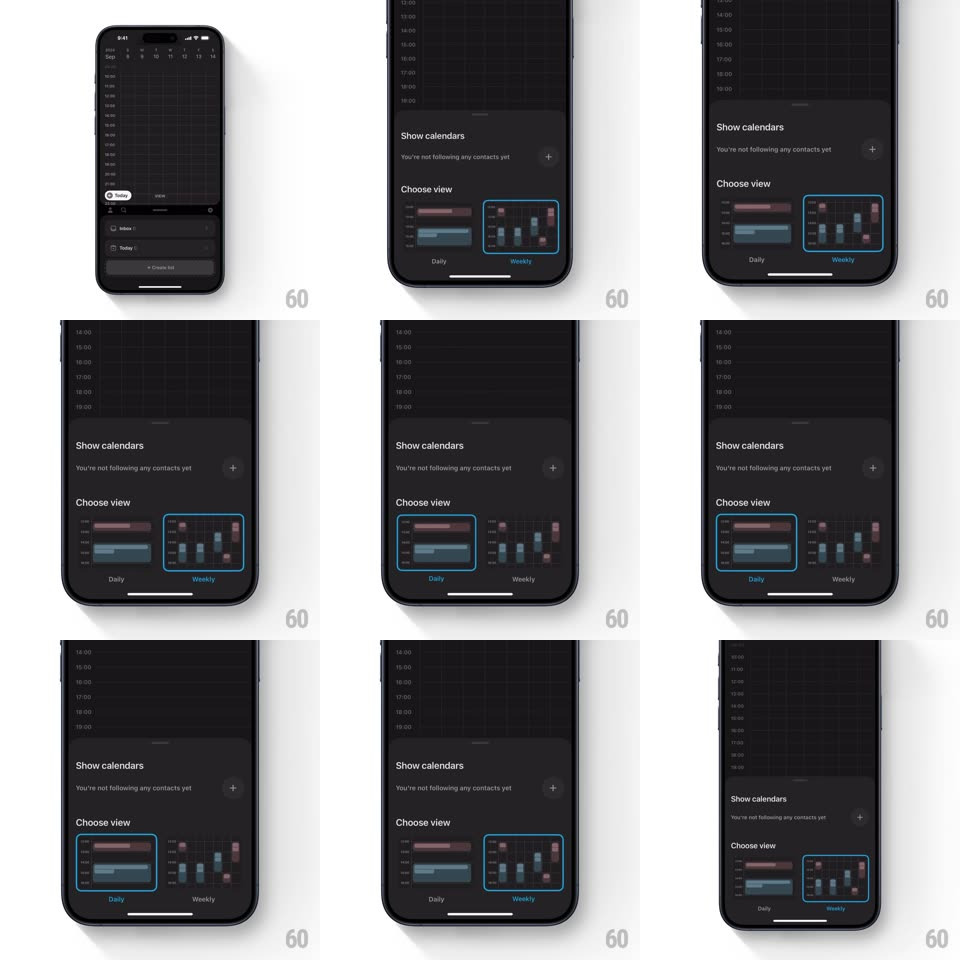

Media
Frame-by-frame

Rebuild this interaction 1:1: Amie's view-picker sheet - a dark bottom sheet rises over the calendar with a "Choose view" section showing Daily and Weekly preview thumbnails; tapping one highlights it with a blue outline and the sheet collapses, the calendar behind switching views.

Rebuild this interaction 1:1: Amie's view-picker sheet - a dark bottom sheet rises over the calendar with a "Choose view" section showing Daily and Weekly preview thumbnails; tapping one highlights it with a blue outline and the sheet collapses, the calendar behind switching views.
## Integration
Integration: stack-agnostic spec - springs given as stiffness/damping, timed motions as duration + curve; map every value to your framework and animation library of choice.
## Scene
Dark calendar app. The sheet: "Show calendars" section ("You're not following any contacts yet", a + button) and "Choose view" with two miniature calendar previews - a wide Daily strip and a dense Weekly grid - each captioned below.
## Motion spec
Pattern: thumbnail-picker sheet with instant apply.
- Entry: the sheet springs up (spring ~330/22, slight overshoot) covering ~60% of the screen; the calendar behind dims 45% and pushes up slightly (scale 0.98).
- The two thumbnails stagger in (fade + 10px rise, 200ms, 80ms apart).
- Tap a thumbnail: its border ignites blue with a soft outer glow (200ms), the thumbnail does a tiny press dip (scale 0.97, 120ms), and after a 150ms beat the sheet slides back down (spring ~340/24) while the calendar behind crossfades to the chosen layout (250ms).
- The selection persists - reopening the sheet shows the current view already outlined.
- Backdrop tap or drag-down dismisses without changing the view (sheet tracks the drag 1:1).
## Calibration
- The previews are miniature but REAL layouts - colored event blocks in each, not gray wireframes.
- Apply-on-tap, no confirm button - the sheet's job is one tap.
## Reduced motion
Sheet fades; view crossfades.
## Don't miss
- The blue outline is the only selection chrome - no checkmarks or radios.
- The calendar morphs behind the closing sheet, so the change reads as a consequence, not a coincidence.